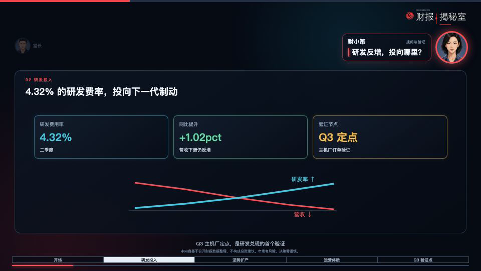
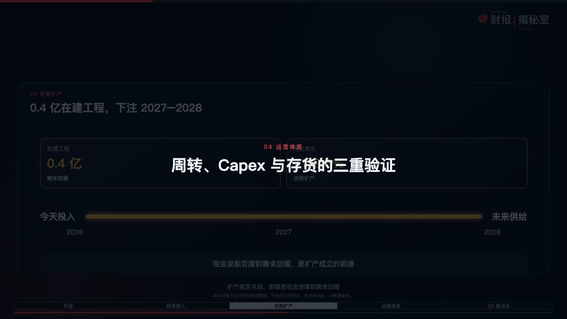

适用于《财报揭秘室》 · Remotion 动效 · 豆包 TTS

已验证流程 · 横版 16:9 财经解释视频 · 2026-08
| 模块 | 已验证的做法 | 不要这样做 |
|---|---|---|
| 开头 | 先用 1 个问题或反差数据做钩子，再接 2.23 秒栏目片头。 | 开场先放品牌片头，或一开始把所有数据抛完。 |
| 人物 | 当前发言者 130px 高亮头像 + 一句关键结论；另一人 64px、低透明度。 | 整段旁白塞进对话框，双方头像同等抢画面。 |
| 章节 | 上一段结束后的 1.4 - 1.6 秒，先展示章节标题；标题退出后再进下一位人物。 | 小标题与人物对话同时出现，或空白停 1 秒。 |
| 数据 | 按照旁白中的数字、因果和验证点渐进出现。 | 画面一进入就把全部卡片、折线和结论放完。 |
| 收尾 | 最后女声“每期三分钟...”起，全屏主标动效；女声结束即终止视频。 | 男声仍在分析时提前上片尾，或片尾后再加尾音/空白。 |
我要做一支《财报揭秘室》风格的横版财经双人对话视频。请先不要生成视频，先阅读我提供的解读稿、人物头像、数据素材、音效和参考视频。 目标：约 [X] 分钟、1920×1080 / 30fps、16:9；不需要口型，只要头像与数据动效。 请输出： 1. 压缩后的完整男女对话文案（标明男女、每句的核心结论）； 2. 逐镜头分镜表：时间段、发言者、画面数据、关键句、音效、转场； 3. 每章节的标题卡位置与时长； 4. 片头/片尾如何接入现有动效； 5. 需要我确认的数字、音色和素材缺口。 节奏要求：钩子 → 片头 → 章节分析 → 全屏片尾；数据必须随旁白渐进出现；章节标题必须先出现并消失，再进入人物解说。
按已确认的分镜执行并渲染预览。使用豆包 TTS：男声“刘飞 2.0”、女声“流畅女声 2.0”。 人物规则：正在说话的人高亮放大；另一人缩小、弱化；对话卡只显示一句关键结论，不能直接放完整旁白。 音画规则：每条音频以真实时长写入 timeline；数据/卡片按句中信息分批出现；章节标题只占上一句结束后的转场空档；禁止标题和人物卡同屏。 片尾规则：最后女声“每期三分钟，拆解财报里的关键信号”开始时切入全屏主标动效，其他 UI 全部关闭；女声结束的同一帧结束视频，不加尾音、不留空白。 先输出 3 个关键时间点的静帧供我确认：一个人物切换、一个章节转场、一个片尾。确认后再导出完整 MP4。
| 输入 | 最小要求 | 交付建议 |
|---|---|---|
| 解读稿 | 带章节小标题，数字口径明确。 | DOCX 或 Markdown；把“必须出现”的数字加粗或单列。 |
| 头像 | 男女主持人各 1 张，正面、清晰、背景干净。 | PNG；人物脸部占画面约 50% 以上。 |
| 品牌资产 | 透明 Logo、主视觉色、免责声明。 | PNG/SVG；注明是否允许在右上角常驻。 |
| 声音 | 男/女声选择、TTS 凭证、是否允许语速调整。 | 先生成 2 - 4 个试听片段，确认后再批量生成。 |
| 参考视频 | 至少 1 支，标出喜欢的 3 个时间点。 | 说明喜欢“节奏、排版、人物切换”还是“音效”。 |
| 音效与配乐 | 可商用来源、文件夹结构。 | 提供 WAV/MP3，并区分“章节、数字、风险、片尾”。 |
| 镜头类型 | 画面规则 | 推荐时长 |
|---|---|---|
| 钩子 | 单人提问 + 1 - 3 个反差指标；不先解释。 | 8 - 15 秒 |
| 栏目片头 | 钩子结束后接人物主标片头；无具体公司数据。 | 2.23 秒 |
| 提问镜头 | 女主持人右侧高亮；左侧男主持人弱化；只留一行问题。 | 2 - 6 秒 |
| 回答镜头 | 男主持人左侧高亮；右侧女主持人弱化；数据面板为视觉中心。 | 6 - 16 秒 |
| 章节卡 | 全屏暗遮罩 + 章节编号与标题；与声音错开。 | 1.2 - 1.6 秒 |
| 收束 | 男声说投资结论时仍是分析画面；最后女声开始时切全屏品牌片尾。 | 3 - 4 秒（仅随末句） |

| 类别 | 本次选择 | 使用原则 |
|---|---|---|
| 男声 TTS | 刘飞 2.0zh_male_liufei_uranus_bigtts | 用于解释、判断、结论；偏沉稳。 |
| 女声 TTS | 流畅女声 2.0zh_female_liuchangnv_uranus_bigtts | 用于提问、追问、收束；节奏利落。 |
| 背景音乐 | immersed.mp3 | 约 12% 音量；开头 1.5 秒淡入；始终让对白处于最前。 |
| 章节 | section-tech-sweep + headline-land | 前者用于章节切换，后者用于标题落定；仅章节使用。 |
| 数据 | data-tick-crisp / number-counter-fast | 数字、计数、指标卡出现时轻用；不要每个元素都响。 |
| 风险 | risk-alert | 仅在阈值、风险提示或警示结论出现时使用一次。 |
| 片尾 | 主标动效自带扫描音效（约 18%） | 与最后一句并行；女声结束即结束，不用 closing-resolve。 |